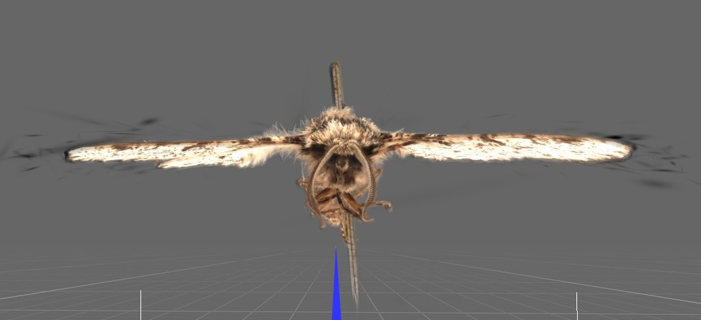
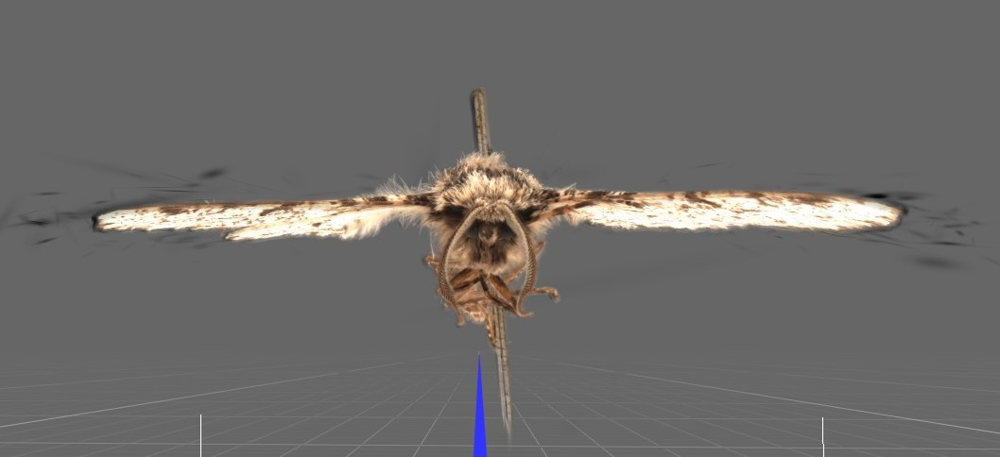

Weeknote 08/09/25
New dome model
Following our Thursday meetings last week, and the redesign on Friday, Anna managed to print a smaller version of her model, which addressed the main issues our first design had. Its main differences are a smoother, more spherical interior, smaller holes for the phone cameras to point through, and the addition of an extremely low-angle view slot for a phone. These should assist with creating a uniform background and lighting to capture all parts of a specimen. The camera positions now being aligned vertically should also help with creating a smooth background, and for camera holes to not be seen when taking photos from multiple perspectives.
Testing phone positioning in dome slots
Before starting to print a full-sized version of the new dome, Anna printed a small section of it, containing two of the phone slots, to check that it fits the iPhones well. The slots were able to hold a range of iPhone models, including the 16 Pro, as well as several phones from other brands. Smaller models left some space in the phone slots, which are larger to accommodate different phone sizes, and we anticipate that this problem is easily solvable by wedging cut plastizoid segments inside the gaps to hold the phone in place during operation. The cameras were also angled correctly, towards the centre of the dome.
Printing a full-sized dome
Small adjustments were made after the testing, such as filleting the camera holes and creating a cover for the bottom slot, finalising the model on Wednesday. Printing of the full-size version will commence next week, once the filament availability at the Churchill make space is confirmed, as we are aiming to print everything in white PLA filament. The dome is just under 50cm long in all dimensions, so the 3D printer models at the Computer Science department are insufficient in size to print them, and this will rely on the Churchill printers and Sam's help.
Lighting
We are currently sourcing LED strips and other components that will help illuminate specimens while we take photos. We have chosen an 8mm, 2-pin LED strip with a high colour rendering index (CRI>90) and neutral coloured lighting (6000K). The strip is also cuttable at every centimetre, offering a high degree of flexibility. These will be connected by L-shaped, clear, solder-free connectors to form a ring around each of the camera holes on the dome. The plan is to subsequently connect these to a USB cable through soldering, and the cables for all camera positions will collectively run through the cable hole at the bottom of the dome. The USB cables purchased had black wiring, which we are planning to cover with white cable tape to minimise interference with scanning.
Motorised turntable
We have begun to work on the design of the motorised turntable that will sit under our dome and allow it to take pictures from different perspectives. We are aiming to broadly follow this structure, making some small necessary changes to a few components, which will allow us to have a ring-shaped top plate, so that the dome is spun and not the specimen. We have decided to spin the dome rather than the specimen to reduce the vibrations the specimen is subjected to for its safety.
On Monday, Arissa and Bea had an induction to the Computer Lab's hardware lab 3D printers with Thomas Bytheway. We are planning to use these to print the turntable parts, which are small.
Stand for pinned specimen
Arissa has worked on designing a stand for the pinned insect to go inside the dome, as well as the turntable's plate and the previously-mentioned changes it needs.

Work at NYU on the 3DGS workflow
At the beginning of the week, Hexu contacted us to share his progress. He shared some amazing visuals of the baseline 3DGS Peppered Moth he had been working on, and explained that they have not applied any advanced techniques to reach the upper bound of 3DGS capability.
 

You can interact with the model here!
On Monday, we used Jon Ludlam's Apple Vision Pro to view the model in MetalSplatter, which was fantastic and so fun!
Insect corner
Insect fact of the week: In Europe there is a lot of folklore surrounding Death's Head Hawkmoths dating back to the early 1800s. In Hungary, its presence signified imminent death and in France it was considered a harbinger of pestilence that could blind with its wing dust.

Thursday meetings
We attended the Insect Ecology and Agroecology lab meeting, where there were some general updates of what the groups have been working on.